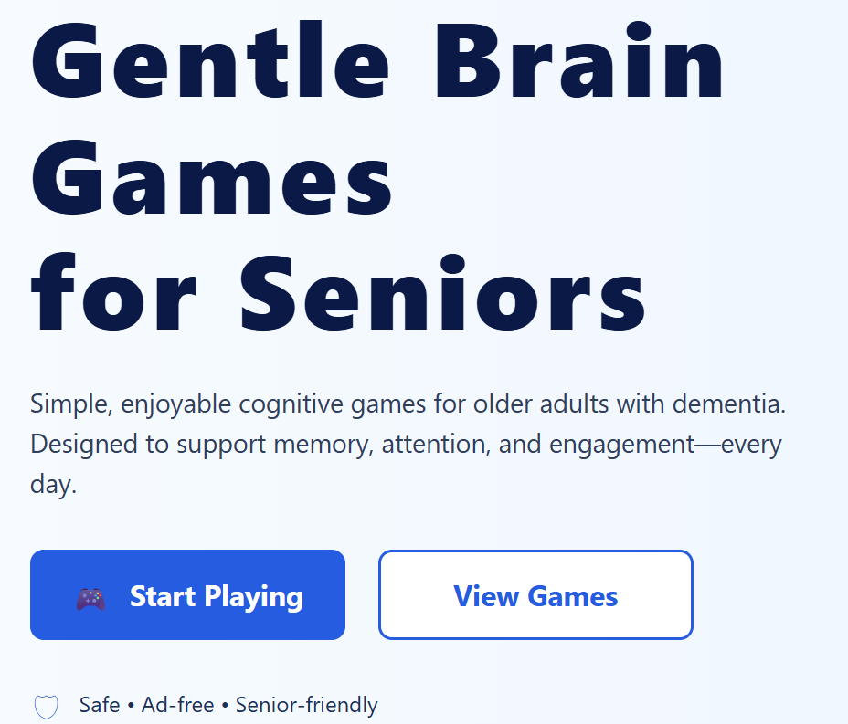
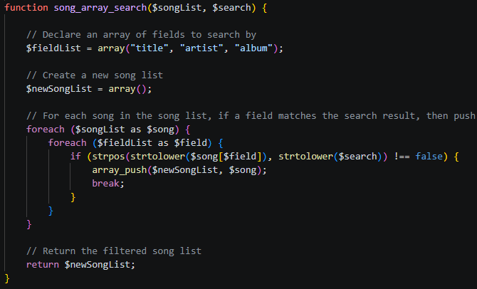
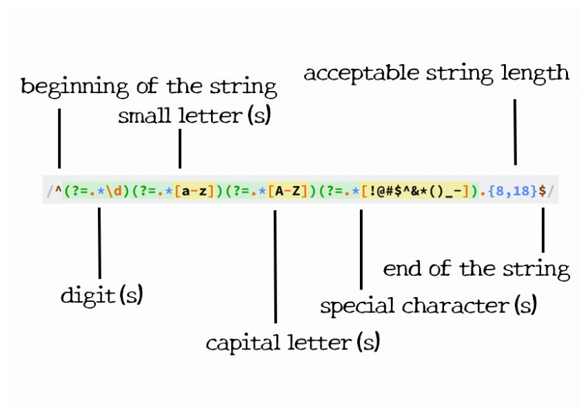
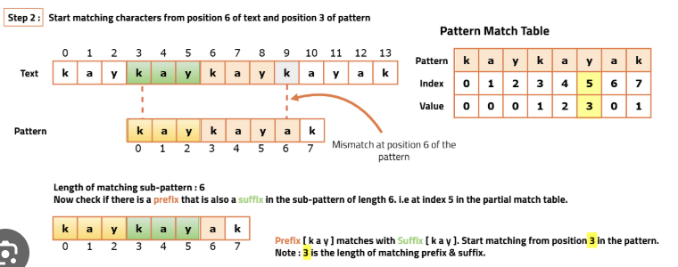
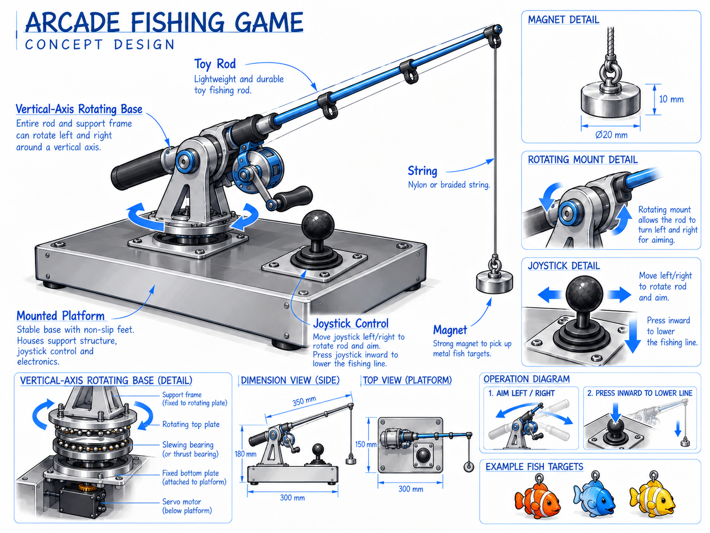

Clean Code
Writing maintainable, organised and scalable applications.
BUILDING AT THE INTERSECTION OF SOFTWARE & ENGINEERING
I hold a Bachelor’s degree in Computer Science and am entering my third year of Mechanical and Mechatronics Engineering at the University of Technology Sydney. I am passionate about combining software development, mechanical design and hands-on engineering to develop practical solutions to real-world problems.
SELECT A DISCIPLINE
About
I am a Computer Science graduate and Mechatronics Engineering student with experience building web applications using Python, Flask, HTML, CSS and JavaScript.
I am currently developing a Flask-based application designed to support people experiencing the early stages of dementia by helping them remember loved ones through family profiles, photographs, relationship information and recorded voice messages.
This project combines my interest in software development with my goal of creating practical, accessible technology that can have a positive impact on people’s everyday lives.
Writing maintainable, organised and scalable applications.
Turning complex problems into practical and reliable solutions.
Exploring new technologies and continuously developing my skills.
Technologies
Technologies and tools I use across software development, web applications and engineering projects.
Recent Work
A selection of software and engineering projects I have worked on.
Web Application
A cognitive web application designed to support people experiencing early-stage dementia by helping them remember loved ones through family profiles, photographs, voice recordings and interactive activities.

University Project
A full-stack web application developed as part of a three-person team using PHP, JavaScript, HTML and XML. PHP was used for server-side logic and data processing, JavaScript added interactive functionality, and XML was used to organise and exchange structured data. The project also involved collaboration, task coordination and integrating code developed by multiple team members.

University Project
A Java-based tool designed to locate and extract patterns from textual data using regular expressions. The program allows users to define custom patterns for tasks such as text parsing, validation and data extraction.

University Project
A Java-based data compression project that applies concepts from the Knuth-Morris-Pratt pattern-matching algorithm to identify recurring sequences in data. The project focused on efficient string searching, pattern detection and reducing repeated data.

Arduino Project
Built an interactive fishing game using an Arduino, joystick, stepper motor and servo motor. The joystick controlled the movement of the fishing rod while the stepper motor operated the reel, allowing the player to collect magnetic fish in an arcade-style challenge.

Background
A background in computer science, professional IT support and hands-on engineering.
University of Technology Sydney
Bachelor's degree — currently studyingUniversity of Waikato
Bachelor's degree — completed 2023I-MED Radiology · New Era Technology · Green Mouse Computing
Systems, troubleshooting, deployment and technical supportContact
I am interested in software development, IT support, embedded systems and mechatronics opportunities.